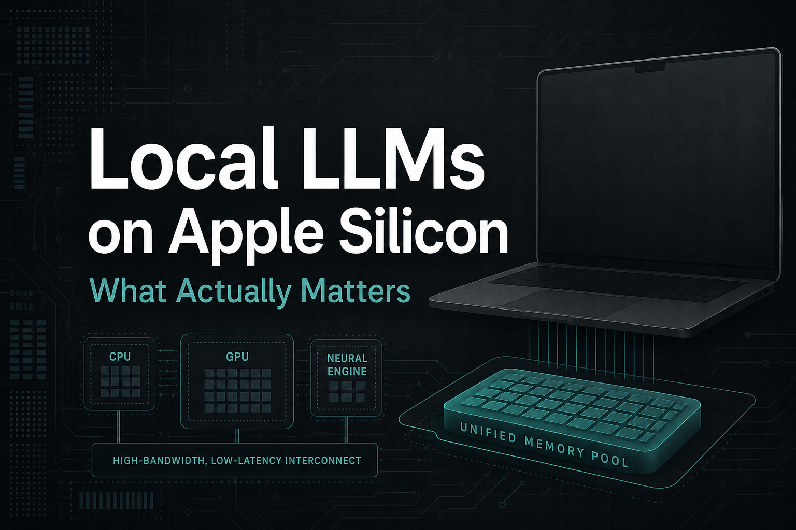
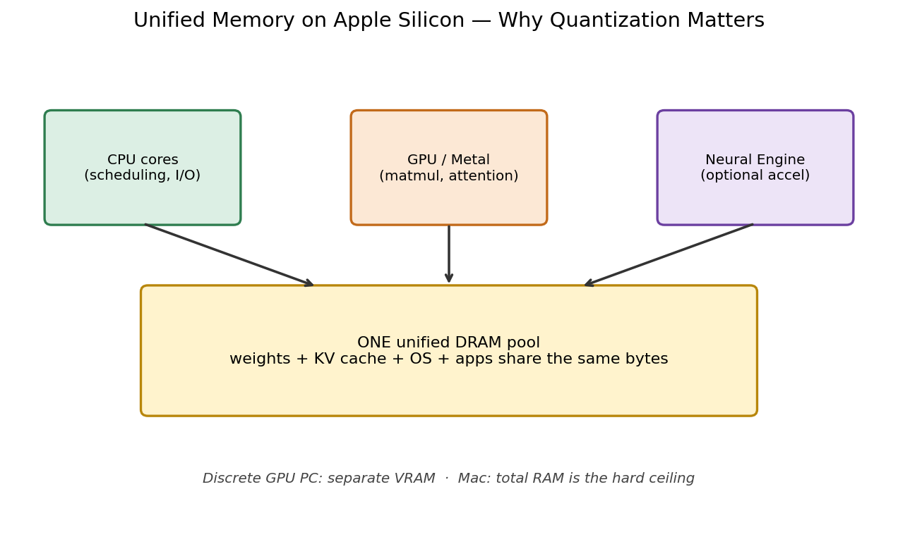
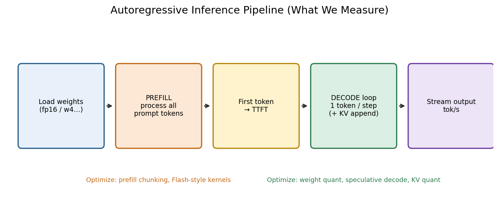
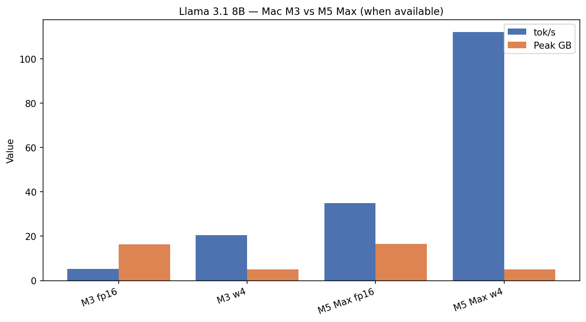
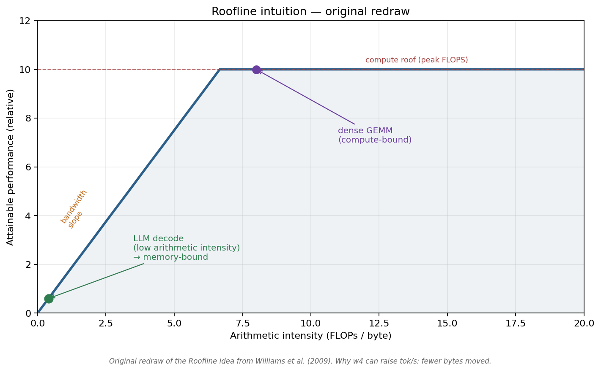
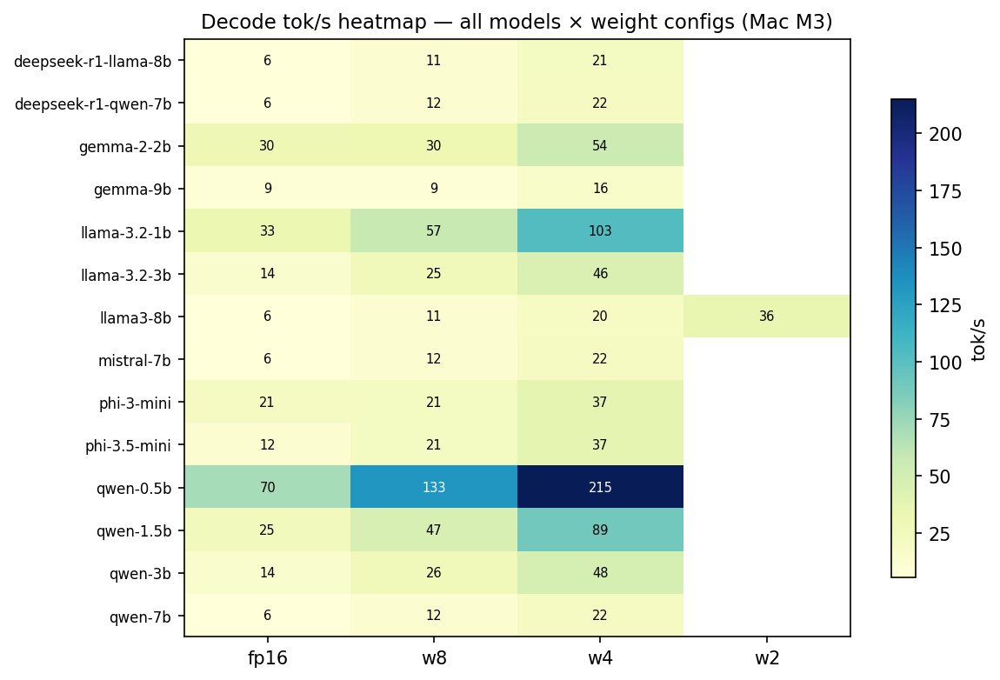

Local LLMs on Apple Silicon — Part 1 of 7
Running 8B LLMs on a MacBook: What Actually Matters
Unified memory, the metrics that matter, and a brutal FP16 baseline on Apple Silicon
../images/thumbnails/thumb_00_introduction.png
I loaded Meta’s Llama 3.1 8B on a MacBook Pro and watched Activity Monitor go red.
No cloud bill. No NVIDIA card. The model ran.
It also felt like dial-up: about 5 tokens per second, with a multi-second freeze before the first word.
That gap — between “it runs” and “I’d use this every day” — is this series.
Why Apple Silicon changes the rules
On a gaming PC, GPU VRAM is a separate pool. On Apple Silicon, CPU and GPU share one unified memory pool.
Your browser tabs and your 8B weights fight for the same bytes.
../images/workflows/00_unified_memory.png
Fun fact: Local LLMs on Mac only became practical once consumer unified memory crossed roughly 16–24 GB.
The only three metrics that matter
../images/workflows/00_inference_pipeline.png
- Peak memory (GB) — will it fit without swap?
- TTFT (ms) — how long you stare at a blank cursor
- Decode tok/s — how fast the answer streams
Optimize the wrong one and your “faster model” still feels broken.
The brutal FP16 baseline
Llama 3.1 8B, FP16, Mac M3 (24 GB), 512-token prompt, 128-token generation:
- 16.33 GB peak memory
- 2,651 ms to first token
- 5.3 tok/s decode
../images/00_intro_hardware_compare.png
On Mac M5 Max, the same FP16 demo jumps to roughly 34 tok/s with far lower TTFT. Silicon matters. Software still matters more for fitting.
../images/papers/williams_roofline_redraw.png
What this series will do
- Weight quantization
- KV cache quantization
- Prefill & TTFT
- Model size ladder
- Full optimization stack
- Speculative decoding
- Bonus: context, RAG, prefix cache
Every number comes from reproducible JSON in an open harness on MLX.
../images/01_heatmap_tps.png
A 10-minute sanity check
Before you trust any blog number — including mine:
- Pick one model you care about.
- Run FP16 and 4-bit only.
- Confirm memory drops ~2–3× and decode rises ~3× on an M3-class chip.
- Measure TTFT with your prompt length.
Reproduce: github.com/Chirumamilla1522/LLM-Inference
./scripts/run_article.sh 0 "Mac M3"
Next → Part 2: 4-Bit Weights Changed Everything